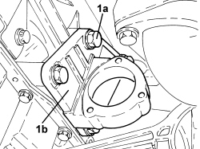

2710A32 INTERMEDIATE DRIVESHAFT BEARING SUPPORT - R + R WITH INTERMEDIATE DRIVESHAFT REMOVED
- Path
- Procedures > 27 AXLE > 2710 FRONT AXLE > 2710A DRIVESHAFTS AND JOINTS > 2710A32 INTERMEDIATE DRIVESHAFT BEARING SUPPORT - R + R WITH INTERMEDIATE DRIVESHAFT REMOVED
- Kind
- repair procedure (removal / refitting; the operation number is the code)
- Applies to
- engines: 2.2 JTS, 2.4 JTD 20v; all production periods
- Interactive page
- https://sloeber94.github.io/elrnDB-aBrrSpdr/en/#/946002098
Applies to: engines: 2.2 JTS, 2.4 JTD 20v; all production periods
 Removing
Removing
 Refitting
Refitting1. Undo the bolts (1a) and remove the intermediate driveshaft bearing support (1b).

Applies to: engines: 2.2 JTS, 2.4 JTD 20v; all production periods
Refitting
Removing- Place the intermediate driveshaft bearing support in position and secure it tightening the bolts to the recommended torque.
Component | Fastening | dia | Value (daNm) | Validity |
|---|---|---|---|---|
Intermediate driveshaft bearing support | Bolt | M10 | 4.5 ÷ 5.5 | 2.2 JTS 2.4 JTD 20V |